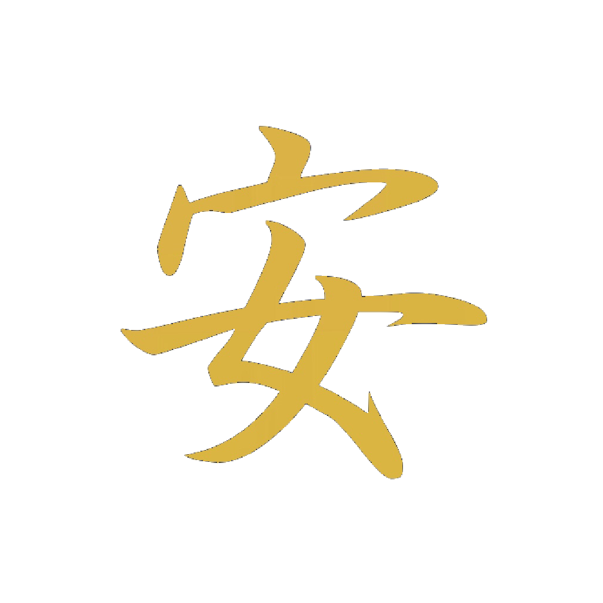
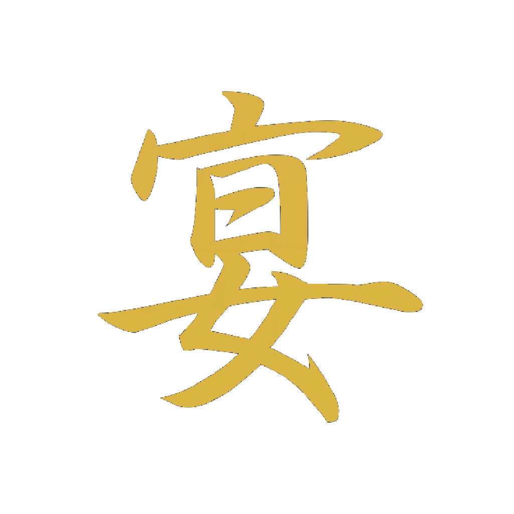
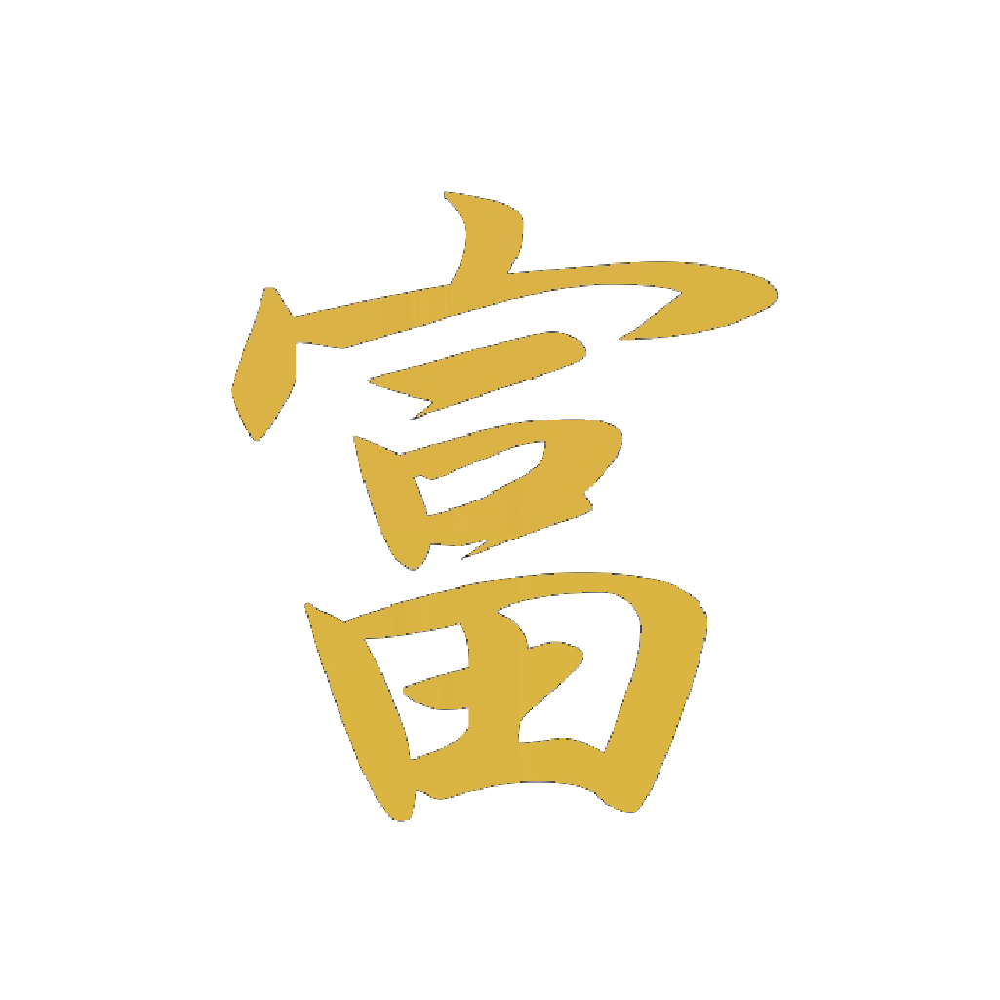
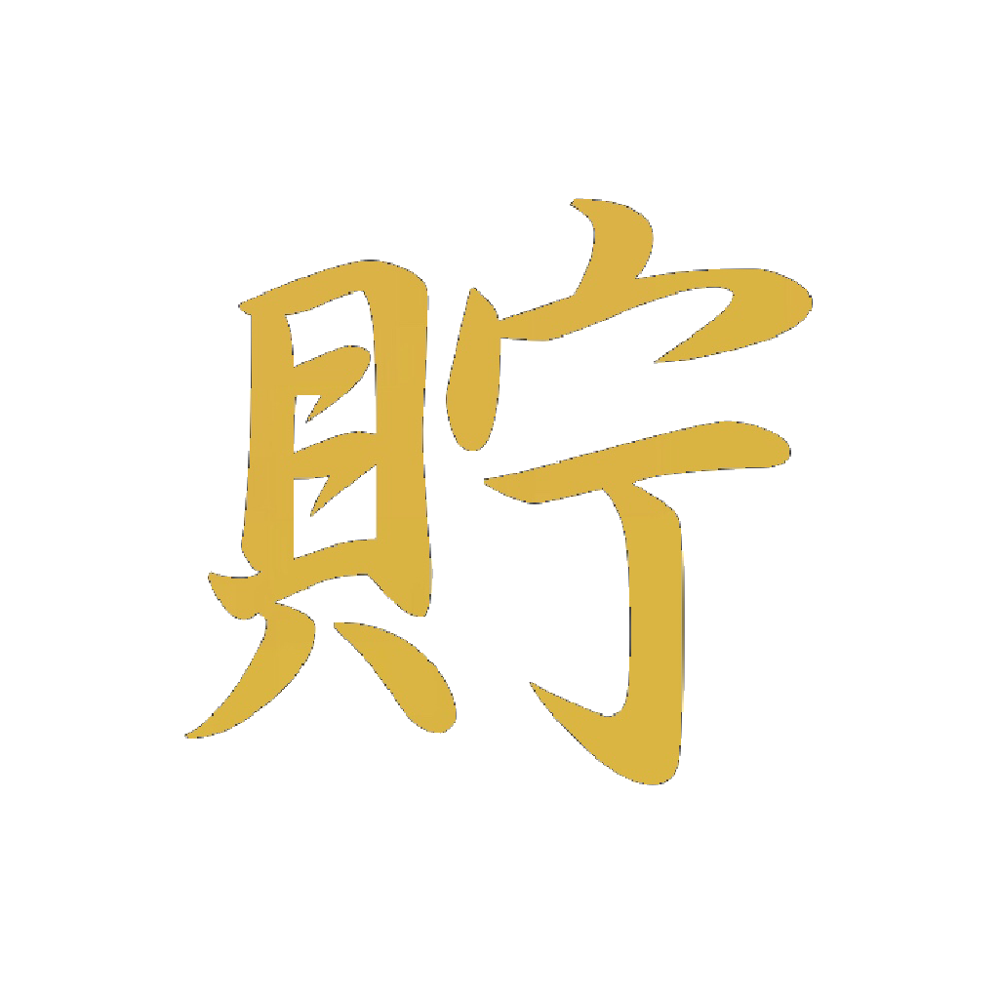

宵（しょう／よい）– evening, early night
- 宵【よい】
– Early evening, dusk - 今宵【こよい】
– Tonight (poetic or literary tone) - 宵祭り【よいまつり】
– Eve of a festival - 宵闇【よいやみ】
– Twilight, dusk darkness - 除夜の宵【じょやのよい】
– New Year's Eve (classical phrasing)

安（あん／やす）– relax, safe
- 安全【あんぜん】
– Safety, security - 安心【あんしん】
– Peace of mind, relief - 安い【やすい】
– Cheap, inexpensive - 安定【あんてい】
– Stability, steadiness - 安眠【あんみん】
– Peaceful sleep

宴（えん）– banquet, feast
- 宴会【えんかい】
– Banquet, party (usually formal or celebratory) - 祝宴【しゅくえん】
– Celebration feast, festive banquet - 大宴会【だいえんかい】
– Grand banquet, large-scale party - 夜宴【やえん】
– Night feast, evening party (poetic/formal) - 酒宴【しゅえん】
– Drinking party, feast with alcohol

寄（き／よ・よせ）– draw near, approach
- 寄る【よる】
– To stop by, to approach - 寄付【きふ】
– Donation, contribution - 寄せる【よせる】
– To bring near, to gather, to send (e.g. a letter) - 寄港【きこう】
– Port call, stopping at a port - 立ち寄る【たちよる】
– To drop in, to stop by briefly

富（ふ／とみ）– wealth, riches
- 富【とみ】
– Wealth, riches (used in literary or formal contexts) - 富士山【ふじさん】
– Mount Fuji (lit. “Mountain of Abundant Wealth”) - 富裕【ふゆう】
– Affluence, prosperity - 貧富【ひんぷ】
– Rich and poor, wealth disparity - 国富【こくふ】
– National wealth

貯（ちょ）– savings, store
- 貯金【ちょきん】
– Savings (money in the bank) - 貯蔵【ちょぞう】
– Storage, preservation (e.g. of food or goods) - 貯水池【ちょすいち】
– Reservoir, water storage pond - 貯蓄【ちょちく】
– Savings, hoarded wealth - 貯留【ちょりゅう】
– Retention, temporary storage (technical or environmental contexts)

木（もく／き）– tree
- 木材【もくざい】
– Lumber, timber - 木陰【こかげ】
– Shade of a tree - 木曜【もくよう】
– Thursday - 木製【もくせい】
– Wooden, made of wood - 木立【こだち】
– Grove, cluster of trees

林（りん／はやし）– grove
- 森林【しんりん】
– Forest - 林道【りんどう】
– Forest road - 林学【りんがく】
– Forestry (science) - 林業【りんぎょう】
– Forestry industry - 竹林【ちくりん】
– Bamboo grove

森（しん／もり）– forest
- 森林【しんりん】
– Forest (same as 林 compound, but larger scale) - 森の中【もりのなか】
– Inside the forest - 森林浴【しんりんよく】
– Forest bathing (nature therapy) - 青森【あおもり】
– Aomori (place name: Blue Forest) - 森閑【しんかん】
– Deep silence (as in a quiet forest)

桂（けい／かつら）– Japanese Judas-tree
- 桂川【かつらがわ】
– Katsuragawa (Katsura River, place name) - 桂林【けいりん】
– Forest of cassia trees - 桂冠【けいかん】
– Laurel (symbol of honor) - 月桂樹【げっけいじゅ】
– Laurel tree (closely related meaning) - 桂花【けいか】
– Osmanthus flower (sometimes associated with 桂)

柏（はく／かしわ）– oak
- 柏餅【かしわもち】
– Kashiwa-mochi (rice cake wrapped in oak leaf) - 柏手【かしわで】
– Clapping hands in prayer (at shrines) - 柏市【かしわし】
– Kashiwa City (place name) - 柏葉【かしわば】
– Oak leaf - 柏崎【かしわざき】
– Kashiwazaki (place name)

枠（わく）– frame
- 窓枠【まどわく】
– Window frame - 枠組み【わくぐみ】
– Framework, structure - 鉄枠【てつわく】
– Iron frame - 額枠【がくわく】
– Picture frame - 木枠【きわく】
– Wooden frame

梢（しょう／こずえ）– treetops
- 梢【こずえ】
– Treetop (standalone word as well) - 梢頭【しょうとう】
– Tree’s uppermost part (literary) - 梢雲【しょううん】
– Cloud touching the treetops (poetic term) - 梢端【しょうたん】
– Very tip of a branch - 梢鳴【しょうめい】
– Sound of the treetops rustling (literary)

棚（ほう／たな）– shelf
- 本棚【ほんだな】
– Bookshelf - 食器棚【しょっきだな】
– Dish cupboard - 戸棚【とだな】
– Cabinet, cupboard - 陳列棚【ちんれつだな】
– Display shelf - 押入れ棚【おしいれだな】
– Closet shelf

杏（きょう／あんず）– apricot
- 杏子【あんず】
– Apricot (the fruit itself) - 杏仁【あんにん】
– Apricot kernel (used in 杏仁豆腐: almond jelly dessert) - 杏花【きょうか】
– Apricot blossom (poetic/literary) - 杏林【きょうりん】
– Medical world (classical reference: "apricot grove" as metaphor for medicine) - 杏色【あんずいろ】
– Apricot color (pale orange hue)

桐（とう／きり）– paulownia
- 桐箱【きりばこ】
– Paulownia wood box (used for storing valuable items) - 桐紋【きりもん】
– Paulownia crest (used in traditional family crests) - 桐生【きりゅう】
– Kiryu (place name) - 桐材【きりざい】
– Paulownia wood material - 五三の桐【ごさんのきり】
– Famous government paulownia crest of Japan

植（しょく／うえる）– plant
- 植える【うえる】
– To plant - 植木【うえき】
– Garden tree, potted plant - 植物【しょくぶつ】
– Plant (general term) - 植林【しょくりん】
– Reforestation, tree planting - 移植【いしょく】
– Transplant (medical or plant-related)

椅（い）– chair
- 椅子【いす】
– Chair - 車椅子【くるまいす】
– Wheelchair - 回転椅子【かいてんいす】
– Swivel chair - 折り畳み椅子【おりたたみいす】
– Folding chair - 椅座【いざ】
– (Classical word for sitting on a mat or floor)

枯（こ／かれる）– wither
- 枯れる【かれる】
– To wither, dry up - 枯葉【かれは】
– Withered leaf - 枯木【こぼく】
– Dead tree, withered tree - 枯死【こし】
– Death by drying or withering - 枯渇【こかつ】
– Exhaustion, depletion (e.g. water resources)

朴（ぼく／ほう）– crude / simple
- 素朴【そぼく】
– Simple, naive, unaffected - 朴訥【ぼくとつ】
– Simple and honest, unsophisticated - 朴木【ほおのき】
– Magnolia tree (sometimes written with this kanji) - 朴直【ぼくちょく】
– Simple and straightforward - 朴然【ぼくぜん】
– Plain, unaffected (literary)